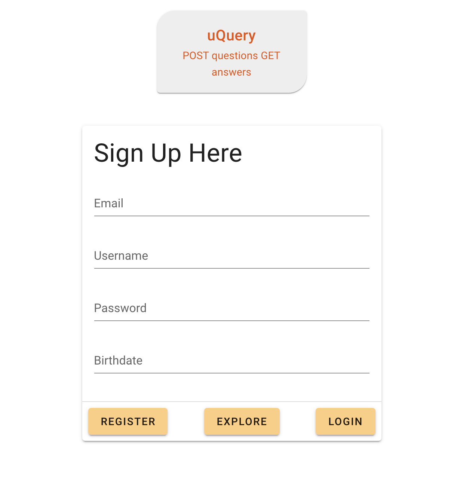

minimum viable product
This was my final project during my time at InnoTech College. The goal was to create a full stack application from scratch. I decided to create a question and answer application inspired by sites like stackoverflow and Yahoo Answers. This was incredibly challenging because it was the first time I had no guidelines to work from. We were given total freedom which, as a novice I found more intimidating than a list of requirements. Throughout the proceedure I faced many challenges in order to implement the features I wanted. Most notibly I faced that challenge of implementing a question bookmarking feature. It took many debugging sessions and plenty of trial and error in order to figure out how to write the SQL and api requests properly to execute my idea. But all was worth it once the feature worked properly for the first time.
This project showed me that I am capable of not only planning and developing an original idea from the ground up but that I am able to solve the problems that will arise during the process. For the front end code please press here. For the backend code please press here. If you would like to visit and test the live site please press here.